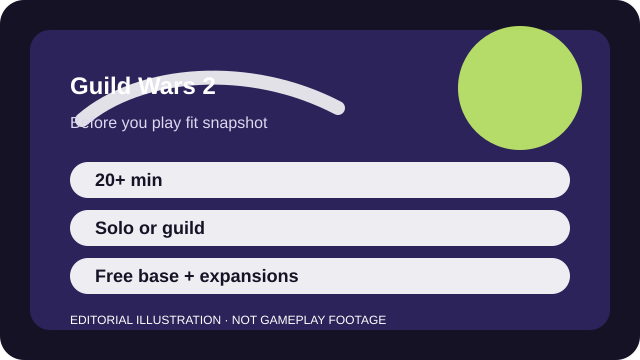

BEFORE YOU PLAY
What this page is and is not
This is a sourced editorial fit profile. It is designed to help with a yes-or-no play decision, and it does not claim a scored hands-on review.
The fit is strongest if open-world exploration and spontaneous event participation sound attractive. It is weaker if you want a heavily directed, linear quest treadmill from the very first zone.
The first-session loop to judge is simple: Roam events, complete story or exploration goals, and gradually open more account-wide systems like mounts, elite specs, and collections.
Leveling is only the first layer; elite specializations, map metas, mounts, and collections deepen the long-term loop.

FIT SNAPSHOT
Guild Wars 2 at a glance
| Genre | Online role-playing game |
|---|---|
| Platforms | PC |
| Business model | Free base access with paid expansions and optional convenience purchases. |
| Typical session | 20 minutes to several hours, depending on whether you want open-world events or deeper progression blocks. |
| Play style | exploration-forward MMO |
| Learning barrier | Early play is welcoming, but gear tiers, masteries, mounts, and endgame systems create a wide information spread over time. |
| Social shape | Guild Wars 2 is easy to play solo in open-world events, while guilds and friends make structured endgame much easier to approach. |
WHO IT FITS
Best fit, likely friction, and the social reality
players who want an MMO with flexible grouping and less subscription pressure
players who need a simple quest flow or a tiny set of systems
Guild Wars 2 is easy to play solo in open-world events, while guilds and friends make structured endgame much easier to approach.
Leveling is only the first layer; elite specializations, map metas, mounts, and collections deepen the long-term loop.
FIRST SESSION PLAN
How to test the fit in one evening
- Pick a profession theme you actually like instead of optimizing for endgame before you know the world.
- Follow hearts and events together rather than speed-running alone through every marker.
- Bank crafting clutter you do not yet understand instead of letting systems overwhelm your first evening.
- Ignore endgame optimization until the level-up and exploration loop proves it is interesting to you.
Use the first session to answer these fit questions instead of judging rank, win rate, or store value immediately.
- Do you want MMO social energy without a subscription clock?
- Are you happy exploring and joining events rather than racing to fixed dungeons?
- Will many side systems feel rich or simply too wide for your available time?
TIME, COST, AND COMMITMENT
What you are really signing up for
| Session budget | 20 minutes to several hours, depending on whether you want open-world events or deeper progression blocks. |
|---|---|
| Social demand | Guild Wars 2 is easy to play solo in open-world events, while guilds and friends make structured endgame much easier to approach. |
| Progression shape | Leveling is only the first layer; elite specializations, map metas, mounts, and collections deepen the long-term loop. |
| Spending pressure | The base entry is generous, but expansions and convenience items unlock much of the larger progression arc. |
You can make steady progress in short chunks, but the broader account systems still reward a long relationship with the game.
The base entry is generous, but expansions and convenience items unlock much of the larger progression arc.
SOURCES AND LIMITS
What was checked, and what can change
- Expansion bundles and seasonal content packaging can alter the value equation.
- Class balance may change which professions are easiest for first-time players.
- Event cadence can shift how lively certain maps feel at any given time.
This profile uses official game pages and defensible general product knowledge to frame the player fit. It does not claim live testing across every platform, accessibility need, or current event rotation.